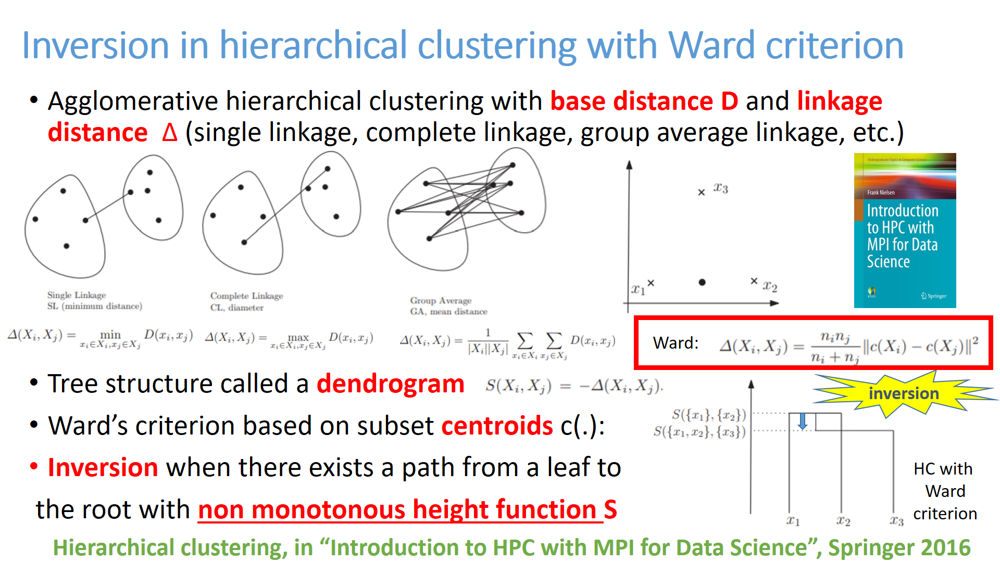
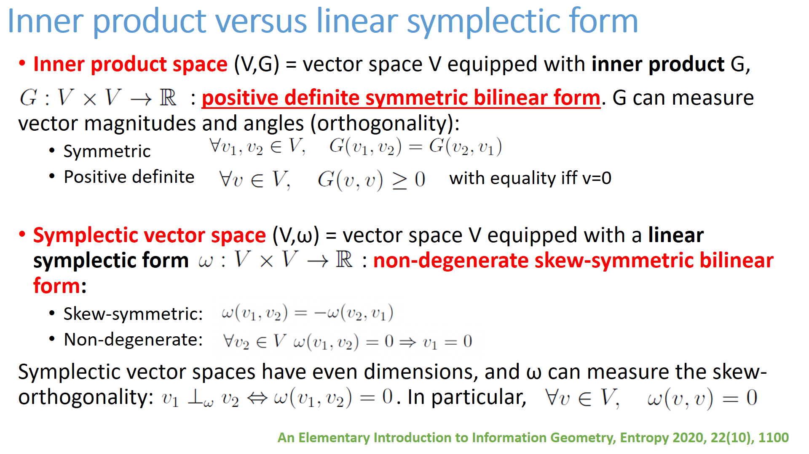
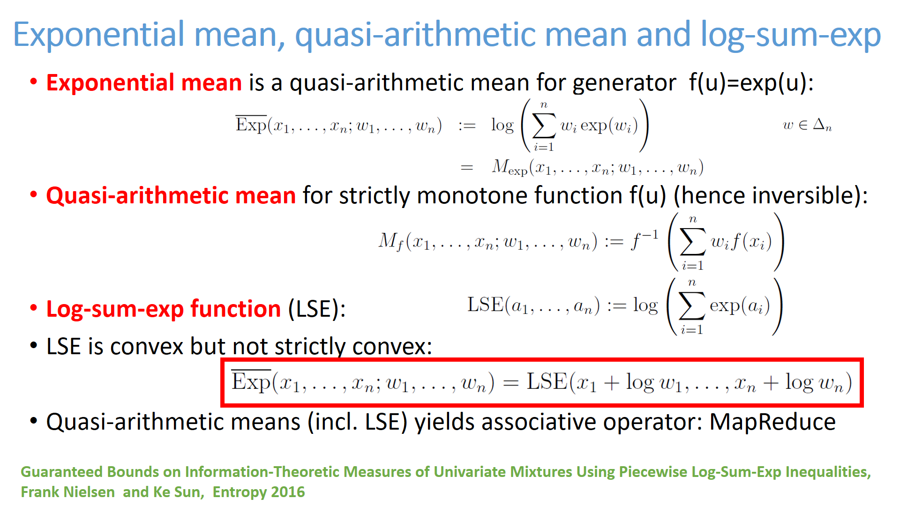

<h1>List of cards</h1>
 Click on a card and then browse previous/next card from that card.<BR>25 cards per page<BR>Card order is a random permutation.<ul><LI><A HREF="C:/Travail/WWWGitHubFrankNIELSEN/FrankNielsen.github.io/Cards/card-0.html" target="_blank"></HREF></LI>

<LI><A HREF="C:/Travail/WWWGitHubFrankNIELSEN/FrankNielsen.github.io/Cards/card-1.html" target="_blank"></HREF></LI>

<LI><A HREF="C:/Travail/WWWGitHubFrankNIELSEN/FrankNielsen.github.io/Cards/card-2.html" target="_blank"></HREF></LI>

<LI><A HREF="C:/Travail/WWWGitHubFrankNIELSEN/FrankNielsen.github.io/Cards/card-3.html" target="_blank"></HREF></LI>

<LI><A HREF="C:/Travail/WWWGitHubFrankNIELSEN/FrankNielsen.github.io/Cards/card-4.html" target="_blank"></HREF></LI>

<LI><A HREF="C:/Travail/WWWGitHubFrankNIELSEN/FrankNielsen.github.io/Cards/card-5.html" target="_blank"></HREF></LI>

<LI><A HREF="C:/Travail/WWWGitHubFrankNIELSEN/FrankNielsen.github.io/Cards/card-6.html" target="_blank"></HREF></LI>

<LI><A HREF="C:/Travail/WWWGitHubFrankNIELSEN/FrankNielsen.github.io/Cards/card-7.html" target="_blank"></HREF></LI>

<LI><A HREF="C:/Travail/WWWGitHubFrankNIELSEN/FrankNielsen.github.io/Cards/card-8.html" target="_blank"></HREF></LI>

<LI><A HREF="C:/Travail/WWWGitHubFrankNIELSEN/FrankNielsen.github.io/Cards/card-9.html" target="_blank"></HREF></LI>

<LI><A HREF="C:/Travail/WWWGitHubFrankNIELSEN/FrankNielsen.github.io/Cards/card-10.html" target="_blank"></HREF></LI>

<LI><A HREF="C:/Travail/WWWGitHubFrankNIELSEN/FrankNielsen.github.io/Cards/card-11.html" target="_blank"></HREF></LI>

<LI><A HREF="C:/Travail/WWWGitHubFrankNIELSEN/FrankNielsen.github.io/Cards/card-12.html" target="_blank"></HREF></LI>

<LI><A HREF="C:/Travail/WWWGitHubFrankNIELSEN/FrankNielsen.github.io/Cards/card-13.html" target="_blank"></HREF></LI>

<LI><A HREF="C:/Travail/WWWGitHubFrankNIELSEN/FrankNielsen.github.io/Cards/card-14.html" target="_blank"></HREF></LI>

<LI><A HREF="C:/Travail/WWWGitHubFrankNIELSEN/FrankNielsen.github.io/Cards/card-15.html" target="_blank"></HREF></LI>

<LI><A HREF="C:/Travail/WWWGitHubFrankNIELSEN/FrankNielsen.github.io/Cards/card-16.html" target="_blank"></HREF></LI>

<LI><A HREF="C:/Travail/WWWGitHubFrankNIELSEN/FrankNielsen.github.io/Cards/card-17.html" target="_blank"></HREF></LI>

<LI><A HREF="C:/Travail/WWWGitHubFrankNIELSEN/FrankNielsen.github.io/Cards/card-18.html" target="_blank"></HREF></LI>

<LI><A HREF="C:/Travail/WWWGitHubFrankNIELSEN/FrankNielsen.github.io/Cards/card-19.html" target="_blank"></HREF></LI>

<LI><A HREF="C:/Travail/WWWGitHubFrankNIELSEN/FrankNielsen.github.io/Cards/card-20.html" target="_blank"></HREF></LI>

<LI><A HREF="C:/Travail/WWWGitHubFrankNIELSEN/FrankNielsen.github.io/Cards/card-21.html" target="_blank"></HREF></LI>

<LI><A HREF="C:/Travail/WWWGitHubFrankNIELSEN/FrankNielsen.github.io/Cards/card-22.html" target="_blank"></HREF></LI>

<LI><A HREF="C:/Travail/WWWGitHubFrankNIELSEN/FrankNielsen.github.io/Cards/card-23.html" target="_blank"></HREF></LI>

<LI><A HREF="C:/Travail/WWWGitHubFrankNIELSEN/FrankNielsen.github.io/Cards/card-24.html" target="_blank"></HREF></LI>

</ul><BR> <A HREF="index18.html">Previous card page</A>&nbsp;&nbsp;&nbsp; <A HREF="index2.html">Next card page</A>
